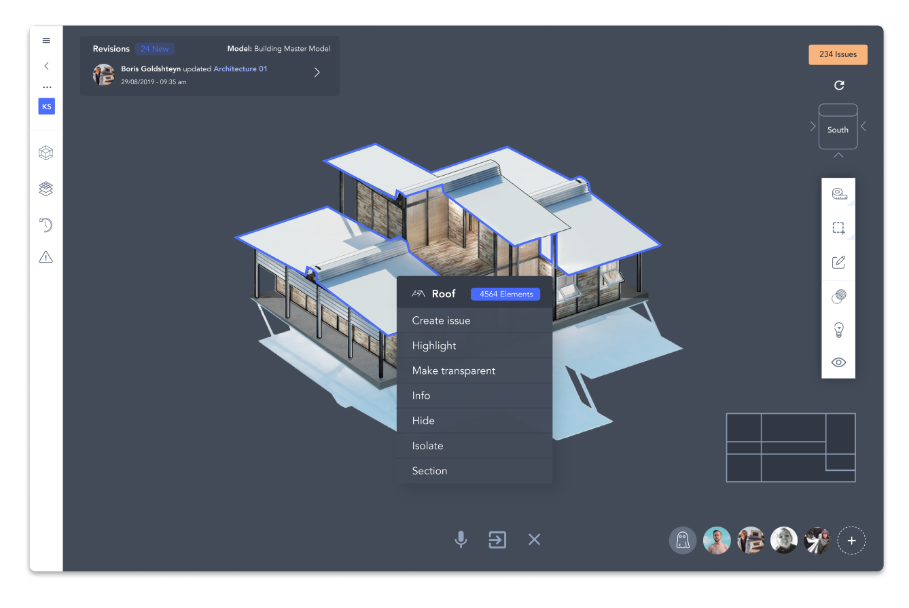
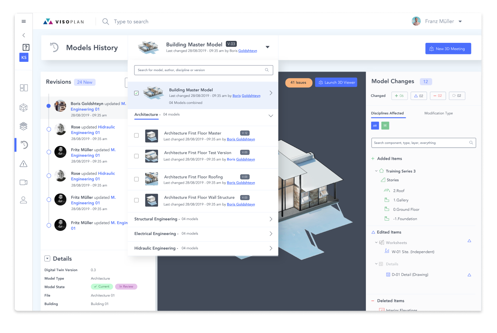
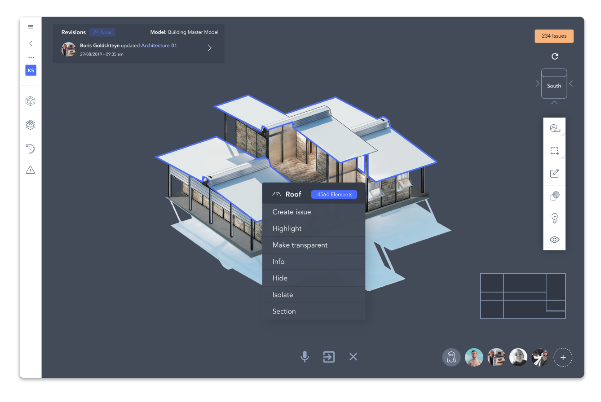
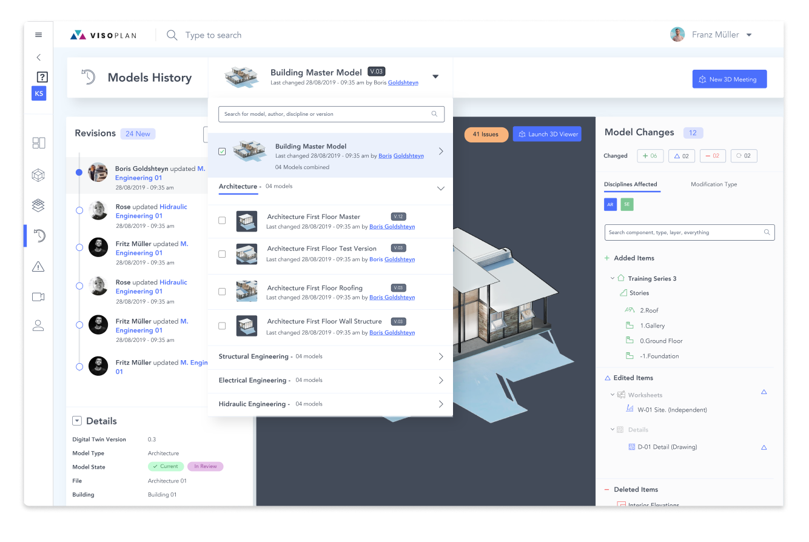

Visoplan ist die zentrale Schnittstelle zwischen allen CAD-Tools. Mit geringem Aufwand lassen sich die verschiedenen IFC-Dateien exportieren und im IFC-Viewer automatisch zu einem BIM-Fachmodell zusammenführen. Darüber hinaus finden die gesamte Kommunikation und der Datenaustausch über unsere Plattform statt.
Exportieren Sie das 3D-Modell als IFC-Datei und integrieren es in Visoplan per Drag & Drop. Die Datei wird automatisch mit den BIM-Fachmodellen der anderen Gewerke zu einem digitalen Zwilling zusammengeführt.
Automatische Zusammenführung der IFC-Fachmodelle
Digitaler Zwilling enthält alle Bauinformationen
Mehr erfahrenBCF-Daten sowohl importieren als auch exportieren
Kommunikation über verschiedene CAD-Tools hinweg
Mehr erfahrenNach Issues und BIM-Modellstatus filtern
Den Überblick bei großen BIM-Projekten bewahren
Mehr erfahrenManagen Sie ihre Bauprojekte zentral mit Visoplan. Dank der vielfältigen Funktionen zur Kollaboration sowie der BIM-Datenhistorie, behalten Sie stets den Überblick in allen Phasen der Bauplanung.
 



IFC-Dateien zu einem digitalen Zwilling verknüpfen Nach BIM-Ebenen (Etage) und -Layer (TGA, etc.) filtern
BIM-Daten werden versioniert, kategorisiert und archiviert
Aktivitäten und Veränderungen im Zeitverlauf
Mehr erfahren3D-Live-Meeting im IFC-Viewer
Gemeinsam über aktuelle Probleme debattieren
Unterstützung von IFC, BFC, PDF und weiteren Formaten
Mehr erfahrenAutomatische Benachrichtigungen, schnellere Entscheidungen
Steuerung und Kommunikation zentral über eine BIM-Plattform
BIM-Kollisionserkennung
Issue Management direkt am 3D-Modell im IFC-Viewer
BIM-Datenhistorie für vollständiges Tracking
Mehr erfahrenUnsere Software archiviert und kategorisiert alle Daten, die in der Bauplanungsphase bei Visoplan hochgeladen werden. Dadurch können in der Bauphase sämtliche Informationen zum BIM-Projekt abgerufen werden.Missverständnisse durch Probleme beim Informationsaustausch oder fehlende Daten werden somit vermieden und die Kommunikation zwischen der Planungs- und Bauphase kann effizienter erfolgen.
3D-Live-Meeting im IFC-Viewer
Reibungsloser Übergang von der Planungs- in die Bauphase
Mehr erfahrenBIM-Kollisionserkennung und Kollisionsimport
Issue Management direkt am 3D-Modell im IFC-Viewer
Mehr erfahrenErleichtern Sie sich den Arbeitsalltag, indem Sie Bauprojekte strukturiert und zentral steuern. Fügen Sie in wenigen Schritten die IFC-Files unterschiedlicher CAD-Tools zu einem Fachmodell zusammen, welches sämtliche Bauinformationen enthält. Lenken und verwalten Sie die gesamte Kommunikation zwischen allen Baubeteiligten über Visoplan.
IFC-Dateien zu einem digitalen Zwilling verknüpfen
Nach BIM-Ebenen (Etage) und -Layer (TGA, etc.) filtern
Mehr erfahrenGezielt nach Daten suchen und filtern
BIM-Daten werden versioniert, kategorisiert und archiviert
Mehr erfahren3D-Live-Meeting im IFC-Viewer
Gemeinsam über aktuelle Probleme debattieren
Unterstützung von IFC, BFC, PDF und weiteren Formaten
Mehr erfahren